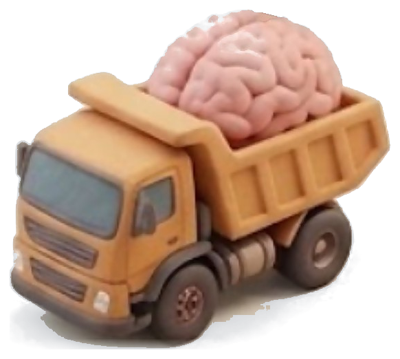

Carga
Mental
Compartida, no invisible
La idea
Un camión que lleva una carga pesada, y esa carga es un cerebro: la carga mental del hogar (acordarse, planificar, organizar y hacer). El mensaje de la app es que el camión se maneja entre todos, y por eso su carga se ve y se reparte.
1 · Logo principal
La ilustración en arcilla, con fondo transparente. Es la versión “héroe”: portada, bienvenida, Novedades, imagen para compartir el link e ícono de la app.
2 · Marca vectorial
Versión simplificada que se dibuja con código (se ve nítida en cualquier tamaño y cambia de color con el tema). El camión toma el color del texto de cada pantalla; el cerebro mantiene su rosa.
3 · Piezas por separado
El cerebro y el camión pueden aparecer solos: el camión vacío significa “nada pendiente”; el cerebro solo, “sin tareas todavía”.
Cerebro
Camión vacío
96
64
40
24
16
144
96
60
36
4 · La carga de hoy
En Hoy, el cerebro crece con lo que queda por hacer: así se ve de un vistazo si el día viene liviano o pesado, y que hay que repartirlo.
0 pendientes
1 a 3
4 a 7
8 o más
5 · Colores
El azul marino es el color de la app; la arcilla y el rosa vienen de la ilustración y se usan solo como acento.
#24476B#1D3A59 → #2F5B86#9CBFE0#E4EDF6#F2A7B0#C9626F#D59A76#121B266 · Espacio y tamaño mínimo
Logo ilustrado: 48 px de ancho. Marca vectorial completa: 36 px de ancho. Cerebro solo: 16 px. Por debajo de eso, usar solo el cerebro.
7 · Cómo sí y cómo no
Sí mantener la proporción y dejar espacio alrededor.
Sí usar el camión vacío para “nada pendiente”.
No poner el logo sobre fotos o fondos recargados.
No usar el cerebro sin su camión para dar a entender que la carga es de una sola persona.